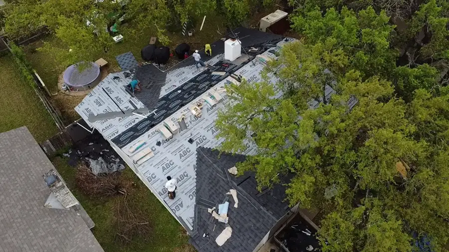
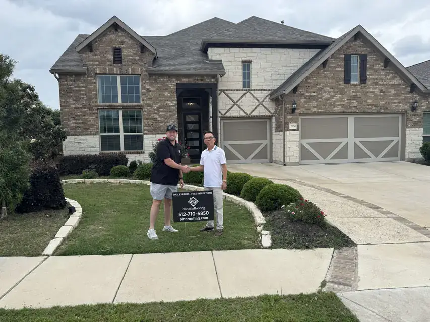

Professional roofing company in Austin, TX.
We do more than install roofs. We handle repairs, full replacements, insurance claims and city permits, backed by lifetime workmanship warranties and premium products.


Locally owned and operated, at 8121 Bee Caves Rd.
Lifetime warranties
Lifetime labor and shingle warranties on all new roofs, coverage most Austin roofing companies can't offer.
Insurance claim experts
We document damage, deal with insurers and fight for the payout you're owed.
Proven local roofer
Premium materials and certification mean leak-free repairs, despite Austin's heavy rains.
Exclusive discounts
$500 off new roof replacements, plus special savings for veterans and first responders.
Master craftsman
CertainTeed Master Craftsman: certified, accredited and 5-star rated.
Residential roofing across Austin, TX.


Why Austin homeowners recommend Pinnacle.
“The Pinnacle Roofing team did amazing from start to finish. We couldn't be happier with their services. They made the insurance process simple, and our home looks beautiful with the new roof.”
Elizabeth W.Google review“Tyler (and the whole Pinnacle team) did fantastic! Made it super easy to deal with my insurance and guided me every step of the way!”
Bobby P.Google review“Pinnacle Roofing replaced our shingles in Brushy Creek after the hail storm. They finished ahead early and left the yard looking good. It's hard to find Austin roofers that care this much.”
S. L.Google reviewFrom small repairs to full roof replacements.
Our residential roofing contractors offer a wide range of services. Trust Pinnacle Roofing Partners for the best roofing solutions for your home.

Shingle roof installation
New roof installation completed per manufacturer specifications. Quality materials and expert craftsmanship so your roof stands strong for years.
Re-roofing
Replace old shingles and inspect the roof structure. If you have an old roof with signs of weather damage, we replace it with a durable, energy-efficient upgrade.
Asphalt shingle replacement
Cracked or missing shingles? We use high-quality, long-lasting shingles installed to the manufacturer's specifications.
Roofing materials installed by Austin's shingle roofers.
Each material has its own strengths. Contact us for a free, no-obligation estimate to find which fits your home and budget.
From Owens Corning to CertainTeed, we use only the highest quality brands and manufacturers.

Our roofing process, step by step.
Initial consultation
Modern roof inspections capture precise measurements and high-resolution photos. You get a free, detailed estimate.
Materials and permits
Choose the right roof for your budget, durability and Austin's climate. We handle local permit applications.
Site preparation
We protect landscaping and belongings, then tear off old shingles down to the decking and repair damaged boards.
New roof installation
Underlayment, water barrier at eaves and valleys, staggered shingles, vents and flashing to prevent leaks.
Ongoing support
We walk through the finished roof with you, with material and workmanship warranties and follow-up service.
Roofing contractors in Austin, serving Central Texas.
Get $500 off your next roof replacement.
Don't wait for small issues to become major repairs. Call now for a free estimate and let Pinnacle handle the hard stuff so you don't have to.